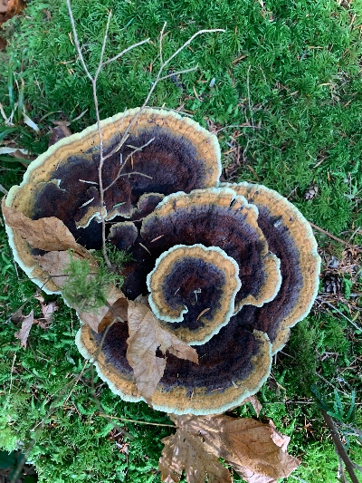

Hi, I'm Tiffany Asper
I find joy in clean, effortless, & beautiful design. Living in the deep green woods of the Pacific Northwest, I love to draw connections from the moss and twigs outside my window to the open webpage. What excites me most about web design is creating a fluid & intuitive experience for users. Away from the screen I can be found on the trail, in my garden, or watching my teenagers play basketball.